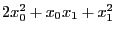

Next: GRBaddqpterms Up: Model Creation and Modification Previous: GRBaddgenconstrIndicator
| int | GRBaddqconstr ( | GRBmodel | *model, |
| int | numlnz, | ||
| int | *lind, | ||
| double | *lval, | ||
| int | numqnz, | ||
| int | *qrow, | ||
| int | *qcol, | ||
| double | *qval, | ||
| char | sense, | ||
| double | rhs, | ||
| const char | *constrname ) |
Add a new quadratic constraint to a model. Note that, due to our lazy update approach, the new constraint won't actually be added until you update the model (using GRBupdatemodel), optimize the model (using GRBoptimize), or write the model to disk (using GRBwrite).
A quadratic constraint consists of a set of quadratic terms, a set of
linear terms, a sense, and a right-hand side value:
 .
The quadratic terms are input through the
.
The quadratic terms are input through the
numqnz, qrow, qcol, and qval arguments,
and the linear terms are input through the
numlnz, lind, and lval arguments.
Important note: the algorithms Gurobi uses to solve quadratically constrained problems can only handle certain types of quadratic constraints. Constraints of the following forms are always accepted:
Return value:
A non-zero return value indicates that a problem occurred while adding the quadratic constraint. Refer to the Error Code table for a list of possible return values. Details on the error can be obtained by calling GRBgeterrormsg.
Arguments:
model: The model to which the new constraint should be added.
numlnz: The number of linear terms in the new quadratic constraint.
lind: Variable indices associated with linear terms.
lval: Numerical values associated with linear terms.
numqlnz: The number of quadratic terms in the new quadratic constraint.
qrow: Row indices associated with quadratic terms. A quadratic term is represented using three values: a pair of indices (stored in qrow and qcol), and a coefficient (stored in qval). The associated arguments arrays provide the corresponding values for each quadratic term. To give an example, if you wish to input quadratic terms , you would call this routine with numqnz=3, qrow[] = {0, 0, 1}, qcol[] = {0, 1, 1}, and qval[] = {2.0, 1.0, 1.0}.
qcol: Column indices associated with quadratic terms. See the description of the qrow argument for more information.
qval: Numerical values associated with quadratic terms. See the description of the qrow argument for more information.
sense: Sense for the new quadratic constraint. Options are GRB_LESS_EQUAL or GRB_GREATER_EQUAL.
rhs: Right-hand-side value for the new quadratic constraint.
constrname: Name for the new quadratic constraint. This argument can be NULL, in which case the constraint is given a default name.
Example usage:
int lind[] = {1, 2};
double lval[] = {2.0, 1.0};
int qrow[] = {0, 0, 1};
int qcol[] = {0, 1, 1};
double qval[] = {2.0, 1.0, 1.0};
/* 2 x0^2 + x0 x1 + x1^2 + 2 x1 + x2 <= 1 */
error = GRBaddqconstr(model, 2, lind, lval, 3, qrow, qcol, qval,
GRB_LESS_EQUAL, 1.0, "New");